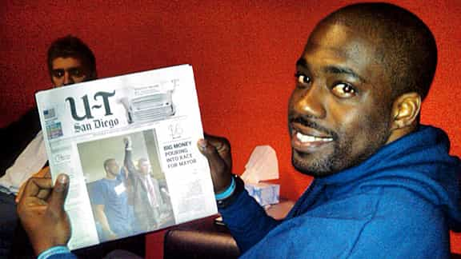

< < < Back
Academic Advisor Accuses Male College Student Of Harassment For Sitting In A Waiting Room – Return Of Kings
If you believed getting academic advice at college was hard, spare a thought for Kevin Bruce of Georgia’s Kennesaw State University. His routine academic advisor was unavailable and the receptionist asked him to come back in an hour.
With nothing else to do but kill time, he chose to wait in that humble room known as… ¡voila!… the waiting room. As he did this, another advisor, Abbey Dawson, came out and accused him of “harassment” for waiting for the first advisor, threatening to call the campus police. Knowing she was coming (and her prickly reputation), the clued-in Bruce filmed both her arrival and baseless, misandrist accusations.
Let’s go to the tape
The video of the incident has gone, unsurprisingly, viral. Most critical commentators have pinpointed the racial differences: Dawson is white, Bruce black. But this ignores the gender-loadedness of the word “harassment,” a buzzword for women who accuse men of something amorphous, often sexual or otherwise gender-based.
The atmosphere of American and other Western colleges is so pernicious nowadays, and so antithetical to the due process rights of male students, that sexual assault, or in this case “regular” harassment, can be anything a particular woman defines it as. And it’s her word against his, with her testimony alone enough to get him found “guilty” in a kangaroo court.
The only reason why this has created a scandal is that Dawson has been caught out peddling falsehoods and lies.
What would have happened if the campus police had arrived? Even if charges or an arrest had not followed, Bruce’s name would have been tarnished, to the pleasure of Dawson, and his future would arguably have been in heavy doubt. There would have been no consequences whatsoever for Dawson, who could play the card of the female victimized by the male, especially an athletic-looking black male.
It’s not just because of her reputation

Kevin Bruce was alert enough to record his encounter with Dawson and her false accusations. But what about those not able to? They’re the next people (read: males) in the misandrist academic firing line.
Twitter erupted with similar stories of Dawson’s apparently legendary rudeness after her deplorable reaction against Kevin Bruce. In many ways, though, this was Bruce’s saving grace. Knowing her antecedence, he was able to preempt and record the altercation (really just a one-way diatribe from her).
Focusing on Dawson’s misanthropy creates a quagmire when we try to expose the “guilty by someone else’s testimony” climate against male students. The emphasis shifts from a female actually proving that a man is harassing her (with objective evidence or proof) to anecdotal details of extreme irritability or other character flaws about a particular accusing woman.
Of course, outing Dawson’s previous antics is very important. But it should only add butter to the bread of innocence before guilt. And “guilt,” including in non-court situations, can only be established where there is proof. Or should be, not that should counts for much nowadays.
Too much of a reliance on an accuser’s reputation only obfuscates the central issue when females allege harassment, sexual assault or rape: there needs to be objective evidence. In the Brian Banks debacle, for example, the vitriol was largely leveled at Wanetta Gibson, his false accuser, rather than the system that allowed him to be incarcerated in the first place, solely on her testimony.

Like with the Brian Banks injustice, too much attention is paid towards the false accuser of rape or harassment, rather than the flawed system, lack of evidence or a failure to uphold a fair standard of proof.
Dawson placed on “administrative leave”
Thankfully, the histrionic Abbey Dawson has been stood down pending an investigation. As the Washington Post reports, she is the director of advising and internships for one of Kennesaw’s academic departments. The university, given her professional responsibility and the clear evidence against her, could have taken a much firmer stand, such as condemning the behavior verbally and much more strongly.
Obviously, considering our own manosphere-inspired interest in due process for men, she should be afforded some review, appeal or follow-up by the university authorities. But if this were an errant college fraternity yelling the word “slut” at passers-by, we all know events would be cancelled, a dean would threaten suspension or expulsion on TV, and proverbial heads would roll.
That a paid university staff member is treated more favorably than students, such as those falsely accused students at the University of Virginia, whose plight lacked evidence against them from the start, demonstrates the overall retrograde culture shared by American tertiary education institutions. Due process and caution is only followed when the allegations and improprieties fall into certain “acceptable” categories.
Rape or harassment allegation with no evidence or just testimony leads to suspensions or expulsions, with the confidentiality of already kangaroo court proceedings being breached (e.g. by Emma Sulkowicz).
Incontrovertibly false accusations of rape or harassment lead to no honor code violations, support from the university, feminist “celebrities” and others (again, Emma Sulkowicz and Jackie Coakley), and “administrative leave” for the likes of Abbey Dawson.
Defame him and we shame you

Dr. Daniel S. Papp, President of Kennesaw State University, and the university itself must take a zero tolerance approach towards staff (or students) making false or unsupported allegations of harassment or sexual assault.
Every woman who defames a man by falsely alleging sexual assault or harassment of any kind must be shamed and outed. Multiple news outlets have covered the Abbey Dawson story and Kevin Bruce should be commended for taking a stand. Fight fire with fire, boys, except, because these men are innocent, the truth is on their side.
Proponents for due process for male students (and, by extension, all men) are perennially ridiculed for not believing women. But we are accosted all the time with examples of women who have flagrantly lied about their initial accusations. In addition, what about the thousands of men in America and elsewhere either sent to jail or kicked out of college based on testimony alone?
Facts matter and facts go beyond someone’s words against another. Society and the legal system meant to support it, plus the processes of non-legal institutions, have regressed to the stage where visually recording an encounter is sometimes a man’s only means of proving his innocence. Short of that, the best thing we can do is to support the falsely accused by spreading their stories and highlighting the institutional unfairness they constantly face.
In the meantime, Abbey Dawson must have her employment at Kennesaw terminated immediately.
Read More: 10 Things Every College Student Needs To Know